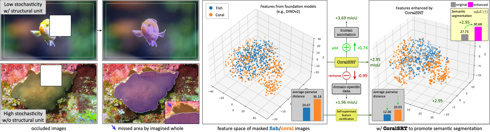

Fig. 1
Corals can grow in diverse shapes, textures, and regions,
thus leading to high physical and appearance stochasticity.
It is challenging to acquire visually consistent knowledge
for segmenting corals, in contrast to segmenting objects
(e.g., fish). We measure the feature distribution
of 400 masked fish and coral images extracted from
foundation models (FMs), and found that the average pairwise
distance among coral samples is higher than that of fish. We
propose CoralSRT, an add-on self-supervised
feature rectification module, to reduce the stochasticity of
coral features. Our method requires no human annotations,
retraining/fine-tuning FMs, or even domain-specific data.
The key insight is to incorporate self-repeated,
asymmetric, and amorphous properties of
corals to strengthen within-segment affinity, leading to
more efficient label propagation in feature space and
producing significant semantic segmentation performance
gains.
Abstract
We investigate coral reef semantic segmentation, in which
multifaceted factors, like genes, environmental changes, and
internal interactions, can lead to highly unpredictable growth
patterns. Existing segmentation approaches in both computer
vision and coral reef communities have failed to incorporate the
intrinsic properties of corals, specifically their
self-repeated, asymmetric, and amorphous distribution of
elements, into model design. We propose
CoralSRT, a feature
rectification module via self-supervised guidance, to reduce the
stochasticity of coral features extracted by pretrained
foundation models (FMs), as demonstrated in
Fig. 1. Our insight is that while different corals are highly
dissimilar, individual corals within the same growth exhibit
strong self-affinity. Using a superset of features from FMs
learned by various pretext tasks, we extract a pattern related
to the intrinsic properties of each coral to strengthen
within-segment affinity, aligning with centrality. We
investigate features from FMs that were optimized by various
pretext tasks on significantly large-scale unlabeled or labeled
data, which already contain rich information for modeling both
within-segment and cross-segment affinities, enabling the
adaptation of FMs for coral segmentation. CoralSRT can rectify
features from FMs to more efficient features for label
propagation and lead to further significant semantic
segmentation performance gains, all without requiring additional
human supervision, retraining/finetuning FMs or even
domain-specific data. These advantages help reduce human effort
and the need for domain expertise in data collection and
labeling. Our method is easy to implement, and also task- and
model-agnostic. CoralSRT bridges the self-supervised
pre-training and supervised training in the feature space, also
offering insights for segmenting elements/stuffs (e.g., grass, plants, cells, and biofoulings).
Framework Overview
Fig. 2
Framework overview of proposed CoralSRT to
rectify features of frozen FMs based on model-generated mask
guidance or human annotations. We force features within each
semantic-agnostic segment to approach its centrality to
reduce the stochasticity of coral features, leading to more
efficient features for label propagation in the feature
space. On the right-hand side, we demonstrate \(
\texttt{Rec}(\cdot) \) is learning high-dimensional features
inside the segment via the centrality (e.g., median
value), which is stable between different inferior segments
due to the intrinsic self-repeated and amorphous properties
of corals.